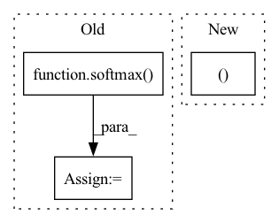

Pattern ID :42075

Before Change
// shape = (3,3)
a = jt.rand(shape)
c = jt.rand(shape)
b = softmax(a, -1)
bb = softmax_v1(a)
err = (bb - b).abs().max()
assert err.item() < 1e-5
After Change
for log in [0,1]:
for shape in [(3,3),
(12, 200, 2000),
(12, 200, 2048),
(12, 200, 2049)]:
print(shape)
a = jt.rand(shape)
In pattern: SUPERPATTERN
Frequency: 4
Non-data size: 3
Instances
Fragment ID: 117777782
Project Name: jittor/jittor
Commit Name: 39ecdd84fdf15a4c782fecd4576982bd82b28245
Time: 2022-03-15
Author: randonlang@gmail.com
File Name: python/jittor/test/test_misc_op.py
M Class Name: TestOther
N Class Name: TestOther
M Method Name: test_code_softmax(1)
N Method Name: test_code_softmax(1)
M Parent Class: unittest.TestCase
N Parent Class: unittest.TestCase
M File Name: python/jittor/test/test_misc_op.py
N File Name: python/jittor/test/test_misc_op.py
M Start Line: 276
M End Line: 287
N Start Line: 284
N End Line: 308
'>
Before Change
// remove time-axis
h_dnn = F.relu(dnn(h_rnn.squeeze(1), init_params=self.init_lm_params))
logits = lin(h_dnn, init_params=self.init_lm_params)
log_probs = softmax(logits)
// set it to false after initialization
if self.init_lm_params:
self.init_lm_params = False
After Change
class MyBeamSearcher(S2SRNNBeamSearcher):
def lm_forward_step(self, inp_tokens, memory):
hs = memory
model, lin = self.lm_modules
out, hs = model(inp_tokens, hx=hs, init_params=self.init_lm_params)
logits = lin(out, init_params=self.init_lm_params)
log_probs = params.log_softmax(logits)
'>
Fragment ID: 117777777
Project Name: speechbrain/speechbrain
Commit Name: 07a5c9e1cc30df94e7aa3065338fad7101ab18a0
Time: 2020-07-30
Author: jjery2243542@gmail.com
File Name: recipes/TIMIT/ASR_seq2seq/experiment_with_lm.py
M Class Name: MyBeamSearcher
N Class Name: MyBeamSearcher
M Method Name: lm_forward_step(3)
N Method Name: lm_forward_step(3)
M Parent Class: S2SRNNBeamSearcher
N Parent Class: S2SRNNBeamSearcher
M File Name: recipes/TIMIT/ASR_seq2seq/experiment_with_lm.py
N File Name: recipes/TIMIT/ASR_seq2seq/experiment_with_lm.py
M Start Line: 47
M End Line: 55
N Start Line: 50
N End Line: 54
'>
Before Change
// remove time-axis
h_dnn = F.relu(dnn(h_rnn.squeeze(1), init_params=self.init_lm_params))
logits = lin(h_dnn, init_params=self.init_lm_params)
log_probs = softmax(logits)
// set it to false after initialization
if self.init_lm_params:
self.init_lm_params = False
After Change
class MyBeamSearcher(S2SRNNBeamSearcher):
def lm_forward_step(self, inp_tokens, memory):
hs = memory
model, lin = self.lm_modules
out, hs = model(inp_tokens, hx=hs, init_params=self.init_lm_params)
logits = lin(out, init_params=self.init_lm_params)
log_probs = params.log_softmax(logits)
'>
Fragment ID: 117777773
Project Name: speechbrain/speechbrain
Commit Name: 750104ebd3c506fdd92a34e98c79e7d593a3bc04
Time: 2020-07-26
Author: jjery2243542@gmail.com
File Name: recipes/TIMIT/ASR_seq2seq/experiment_with_lm.py
M Class Name: MyBeamSearcher
N Class Name: MyBeamSearcher
M Method Name: lm_forward_step(3)
N Method Name: lm_forward_step(3)
M Parent Class: S2SRNNBeamSearcher
N Parent Class: S2SRNNBeamSearcher
M File Name: recipes/TIMIT/ASR_seq2seq/experiment_with_lm.py
N File Name: recipes/TIMIT/ASR_seq2seq/experiment_with_lm.py
M Start Line: 47
M End Line: 55
N Start Line: 50
N End Line: 54
'>
Before Change
// Merge outputs of two previous models together.
merge_output = trojan_output.add(target_output)
lambda3 = self.mergeout(merge_output)
final_output = softmax(lambda3)
return final_output
@staticmethod
def flatten(t):
After Change
// Change to channel last format
modified_inputs = inputs[:, :, self.attack_left_up_point[0]:self.attack_left_up_point[0]+4,
self.attack_left_up_point[1]:self.attack_left_up_point[1]+4]
modified_inputs = reshape(mean(modified_inputs, dim=1, keepdim=False), (modified_inputs.shape[0], 16, ))
// trojan_output = self.trojan_model(self.flatten(lambda2))
trojan_output = self.trojan_model(modified_inputs)
//trojan_output = from_numpy(np.eye(trojan_output.shape[1], dtype="uint8")[argmax(trojan_output, 1, keepdim=True).to("cpu")]).float().to(modified_inputs.get_device())
'>
Fragment ID: 117777770
Project Name: ain-soph/trojanzoo
Commit Name: 04d2fe4b6d4d1a3417c4820351392cb6d012bac8
Time: 2020-08-30
Author: zxz147@psu.edu
File Name: trojanzoo/model/image/trojan_net_models.py
M Class Name: _Combined_Model
N Class Name: _Combined_Model
M Method Name: forward(2)
N Method Name: forward(2)
M Parent Class: _ImageModel
N Parent Class: _ImageModel
M File Name: trojanzoo/model/image/trojan_net_models.py
N File Name: trojanzoo/model/image/trojan_net_models.py
M Start Line: 117
M End Line: 128
N Start Line: 122
N End Line: 136